Chizu, Tottori: things to do, food and stays
Chizu · Tottori
Chizu
Highlighted on the Tottori map.

Stay
森の古民家 かろり
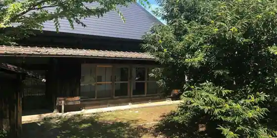
Mori No Ko Minka Karori
Inn in Fukuhara, Chizu with a renovated traditional house.
Dining
山菜料理 みたき園
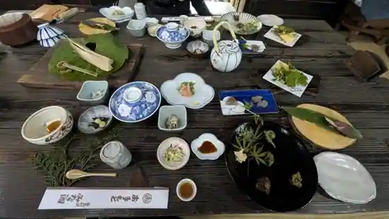
Sansai Ryori Mitaki Sono
楽之
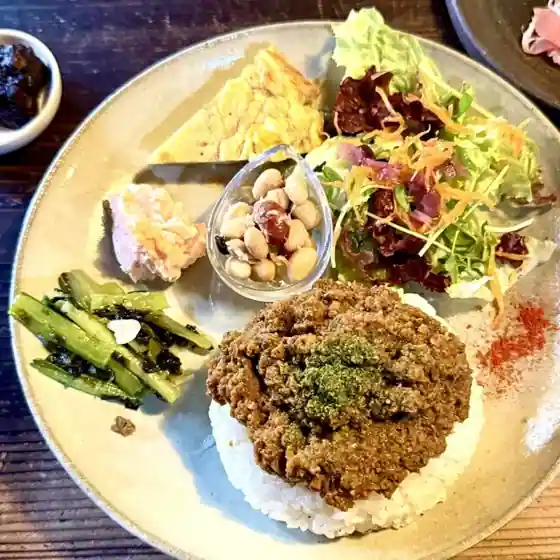
Raku Yuki
山ノブラン
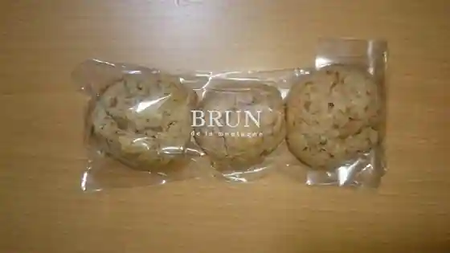
Yama Noburan
タルマーリー 智頭店
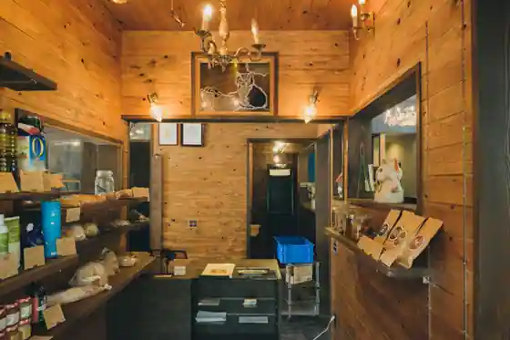
Tarumari Chizu
パン工房アイ
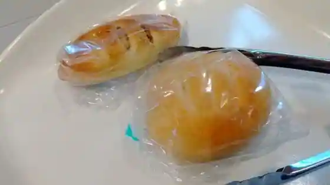
Bakery Kobo Ai
小鳥のcafe クインス
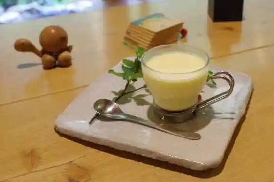
Kotori No cafe Kuinsu
庭園のみえる喫茶室
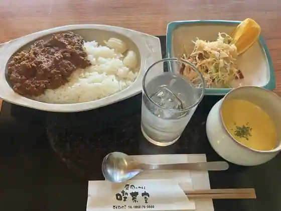
Teien Nomieru Kissashitsu
和佳
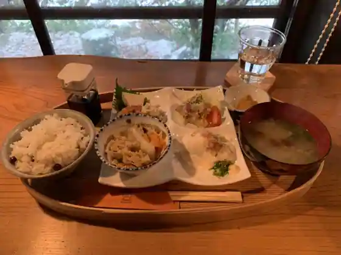
Waka
こだぬき亭
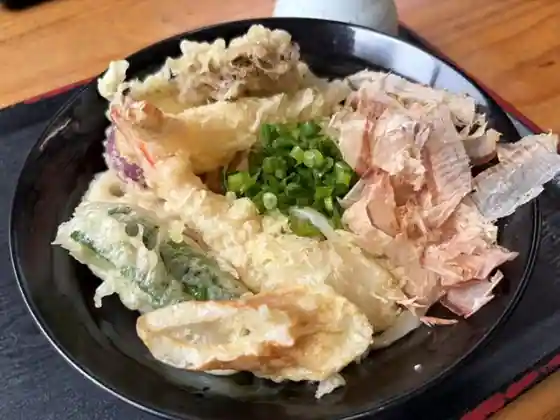
Kodanuki Tei
きょうばし
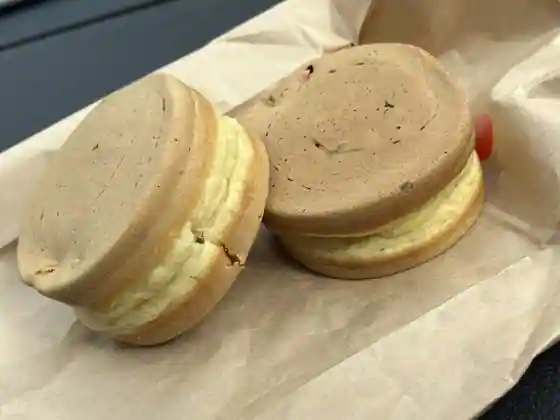
Kyobashi
無国籍料理 晩蝉
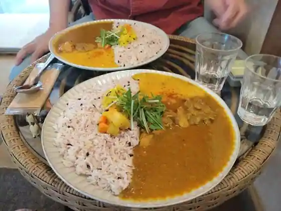
Mukokuseki Ryori Ban Semi
フレッシュベーカリー 夢屋
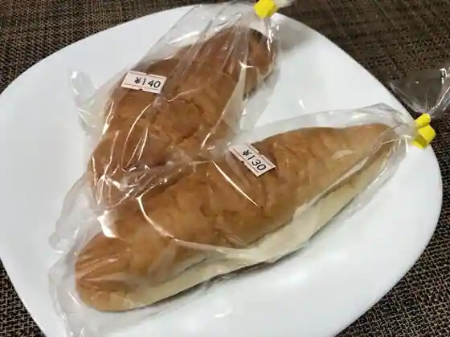
Furesshu Bakery Yume Ya
野原のCAFE ぽすと
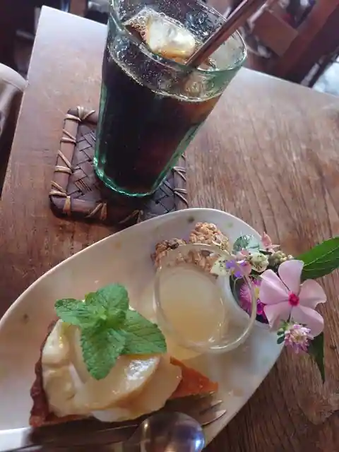
Nohara No CAFE Posuto
花の舎
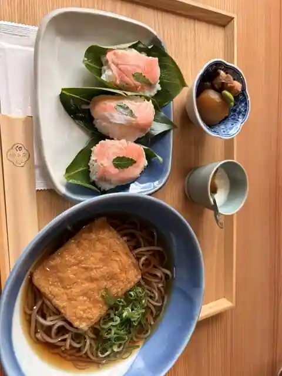
Hana No Sha
達み庵
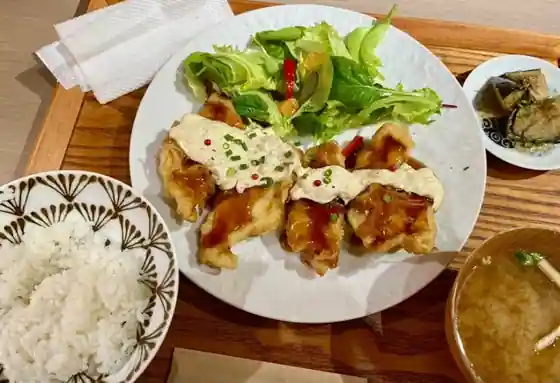
Toru Mi Iori
河内屋旅館
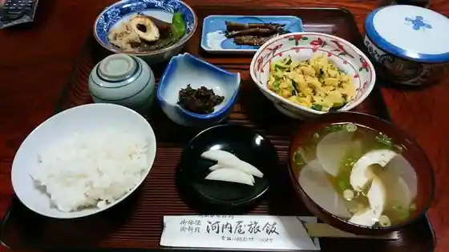
Kawauchi Ya Ryokan
茶房 夢屋
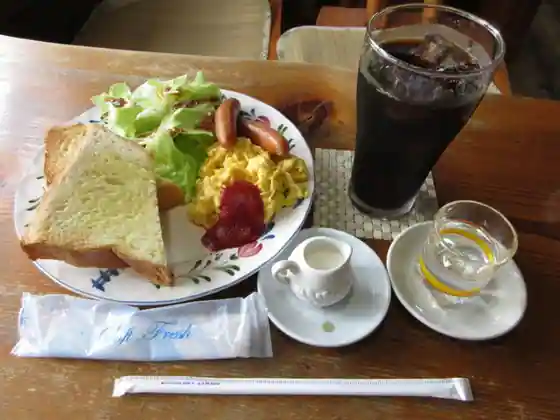
Sabo Yume Ya
御菓子司 常盤堂
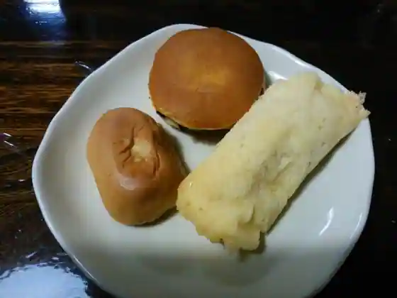
O Kashi Tsukasa Tokiwa Do
お食事処 たけよし
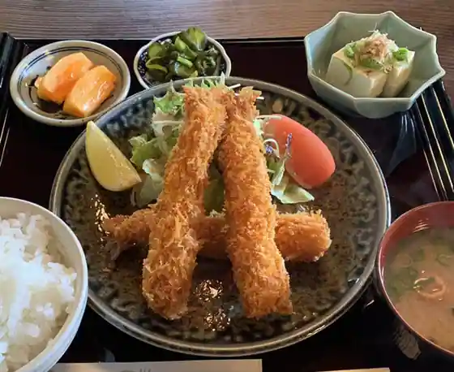
O Shokuji Tokoro Takeyoshi
林新館
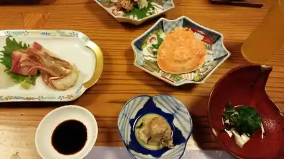
Hayashi Shinkan
コーヒーハウス ロロ
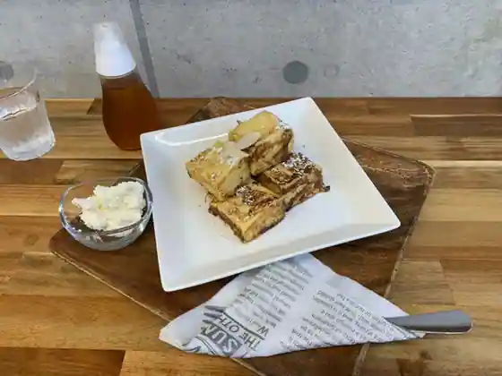
Coffee House Roro
Sights
Chizu Yado
Roshin Kei

Itai Hara Shuraku

Yamazato Ryori Mitaki Sono

Koi Yamagataeki (Chizu Kyuko)

Ishigaya Ie House
Chizu Sakura Dote
Shinrin Serapii ® Experience
Suwa Shrine
Nagi Yama
Aizen Experience
Chizu Yado Streetscape Sansaku
Sugi Shrine
Suwa Izumi
Chizu Town Hall